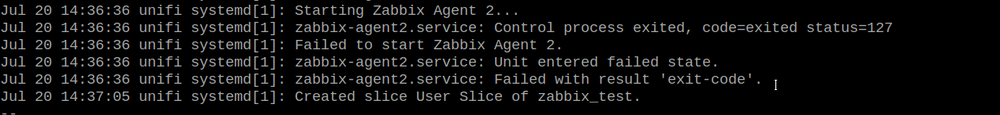
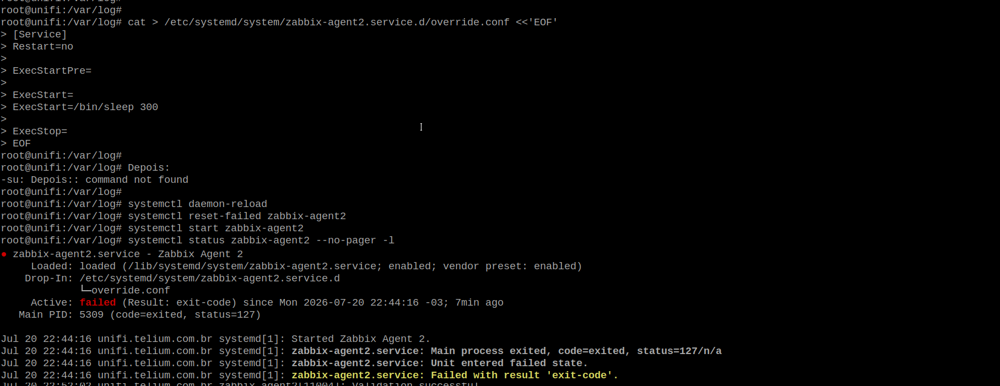
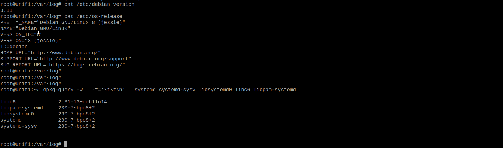
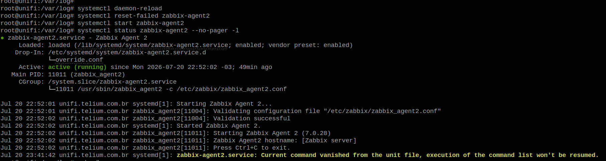
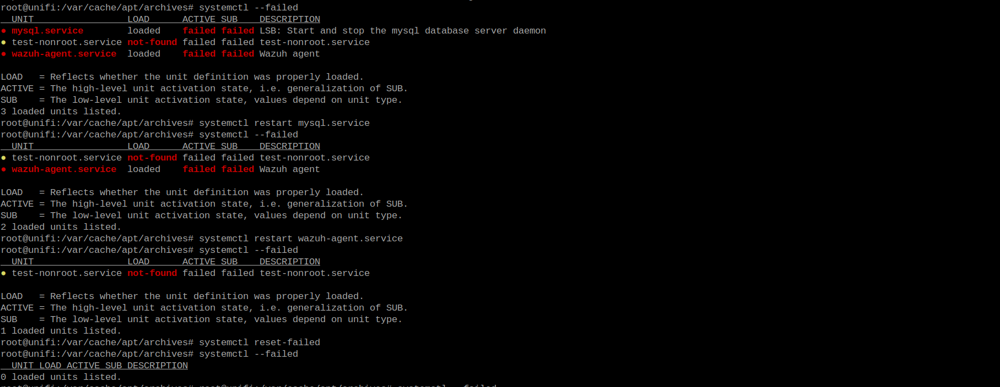

Diagnóstico de serviços systemd retornando status=127 após instalação do Zabbix Agent 2
| Informação | Valor |
|---|---|
| Tipo | Estudo de Caso |
| Categoria | Linux / systemd |
| Nível | Avançado |
| Ambiente | Debian |
| Data | 2025-05-23 |
Objetivo
Documentar a investigação realizada após a instalação do Zabbix Agent 2, onde o serviço não iniciava e retornava status=127.
Embora o problema tenha sido inicialmente associado ao Zabbix, a investigação demonstrou que a causa estava em uma inconsistência do sistema operacional, decorrente de uma atualização parcial do Debian.
Este estudo apresenta o processo de diagnóstico, as hipóteses levantadas, os testes realizados, as evidências coletadas e a solução aplicada.
Ambiente
| Item | Valor |
|---|---|
| Sistema Operacional | Debian Jessie |
| Kernel | 3.16 |
| systemd | 230 |
| libc | 2.31 |
| Serviço instalado | Zabbix Agent 2 |
| Outros serviços | MySQL, Wazuh Agent |
Cenário
Após a instalação do Zabbix Agent 2, o serviço não iniciava.
A execução do comando:
systemctl status zabbix-agent2
retornava:
Main process exited, code=exited, status=127
Inicialmente, tudo indicava um problema relacionado à instalação ou configuração do agente.
PRINT 01
Status inicial do serviço apresentando erro status=127.

Primeiras hipóteses
Como o erro ocorreu imediatamente após a instalação do agente, as primeiras linhas de investigação concentraram-se no próprio Zabbix.
Foram consideradas as seguintes possibilidades:
- erro na instalação do pacote;
- configuração incorreta;
- permissões do usuário
zabbix; - arquivo de configuração inválido;
- bibliotecas ausentes;
- problemas no PATH;
- falha nas variáveis de ambiente.
Validação da configuração
O primeiro passo foi validar a configuração do agente.
sudo -u zabbix \
/usr/sbin/zabbix_agent2 \
-T \
-c /etc/zabbix/zabbix_agent2.conf
Resultado:
Validation successful
Conclusão:
A configuração do agente estava correta.
Ampliando a investigação
Como a configuração estava válida, passou-se a verificar se o problema era realmente do Zabbix.
Para isso, o serviço foi alterado temporariamente para executar apenas:
ExecStart=/bin/sleep 300
O resultado foi surpreendente.
Mesmo sem executar o Zabbix, o serviço continuava encerrando com:
status=127
Esse teste foi o primeiro indício de que o problema não estava relacionado ao agente.
PRINT 02
Teste substituindo o serviço por /bin/sleep.

!!! tip "Ponto de inflexão da investigação"
A substituição do Zabbix por um simples `/bin/sleep` demonstrou que qualquer processo iniciado pelo **systemd** utilizando um usuário não privilegiado falhava com `status=127`.
A partir desse momento a investigação deixou de focar no Zabbix e passou a analisar o sistema operacional.
Confirmando a hipótese
Para eliminar definitivamente qualquer influência do agente, foi criado um novo serviço de teste utilizando o usuário nobody.
[Service]
User=nobody
Group=nogroup
ExecStart=/bin/sleep 300
O comportamento foi exatamente o mesmo.
status=127
Conclusão:
O problema afetava qualquer serviço iniciado pelo systemd utilizando usuários não privilegiados.
Hipóteses descartadas
Durante a investigação foram descartadas:
- configuração do Zabbix;
- permissões do usuário;
- grupos;
- PATH;
- LD_PRELOAD;
- LD_LIBRARY_PATH;
- AppArmor;
- Audit;
- shell;
- executável;
- arquivo de configuração.
Descobrindo a causa
Com o foco deslocado para o sistema operacional, foi realizado um levantamento completo do ambiente.
Foi identificado que o servidor encontrava-se em um estado inconsistente, resultado de uma atualização parcial do Debian.
Resumo das versões encontradas:
| Componente | Versão |
|---|---|
| Debian | Jessie |
| Kernel | 3.16 |
| systemd | 230 |
| libc | 2.31 |
Além disso, centenas de pacotes permaneciam pendentes de atualização, caracterizando um ambiente híbrido entre versões do Debian.

Isso é reforçado pelo apt-cache policy:
libc6:
Installed: 2.31-13+deb11u14
Candidate: 2.31-13+deb11u14
2.31-13+deb11u14
https://security.debian.org/debian-security/ bullseye-security/main
Correção aplicada
Como o problema estava relacionado ao ambiente e não ao Zabbix, foi realizada uma atualização dos componentes responsáveis pelo gerenciamento de serviços.
apt install \
systemd \
systemd-sysv \
udev \
libpam-systemd
Após a atualização foi executado:
systemctl daemon-reload
Em seguida, os serviços foram reiniciados.
Validação
Após a atualização:

O Zabbix Agent 2 iniciou sem qualquer alteração adicional em sua configuração.

Outros serviços que apresentaram problemas, foram iniciados com sucesso.
Conclusão
Embora a falha tenha sido identificada durante a instalação do Zabbix Agent 2, o agente não era a causa do problema.
A investigação demonstrou que o erro estava relacionado ao próprio sistema operacional, que apresentava uma atualização parcial do Debian e uma inconsistência nos componentes do systemd.
A atualização desses componentes restaurou o funcionamento normal dos serviços executados por usuários não privilegiados.